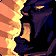

Умные макросы для воина-неистовства
WotLK 3.3.5a · браузерный сервер lasthavens.com · русскоязычный клиент. Пять кнопок вместо пятнадцати: макрос сам выбирает умение под ситуацию, сам переключает стойку и не обновляет активные баффы.

Боевой крик сам
Обновляется только когда спал — GCD не тратится впустую.
Стойки сами
Рывок из боя, Перехват в бою — без ручных танцев.
Прерывание
Наведи на кастующего и нажми — цель не меняется.
5
кнопок на всё
233
DPS в данже 54 ур.
1
клик — установка